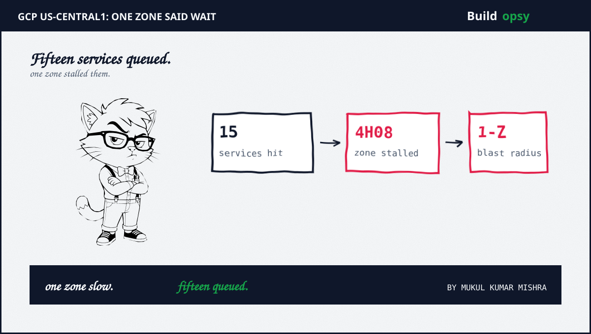
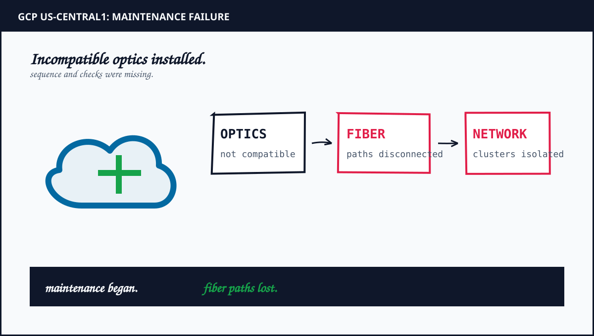

1. A Zone Slowed Plus A Region Queued
Zones promise isolation. Regions share control. When us-central1-b slowed on September 1, the failure stayed inside one zone while the pain spread across the region. Compute plus storage plus networking calls that touched the slow zone waited. Calls that avoided it still queued behind shared control operations. Isolation held for hardware. It failed for coordination.
The pattern repeats in every zonal stall this house has priced. Data planes degrade locally. Control planes serialize globally. Health checks report the zone as sick while schedulers keep offering it work. The bill hides in the boundary between the failed zone plus the shared brain that routes around it.
2. Fifteen Services Behind One Slow Disk Of Truth
Fifteen services sounds like fifteen failures. It reads better as one queue with fifteen readers. Provisioning plus autoscaling plus load balancer updates funneled through control operations that waited on the slow zone. Each service added its own timeout plus its own retry policy on top. None of them knew the other fourteen were doing the same.
Status aggregators recorded the shape: elevated errors plus latencies across the service list with recovery clustered near 11:52 AM. Clustered recovery means shared cause, not fifteen independent bugs. Fix the shared cause first. The fifteen graphs follow.

3. The Retry Amplifier Did The Real Damage
Calm control traffic is thin. Storm control traffic is thick with repeats. At an estimated 40,000 control operations per minute in the region, a 30 percent stall rate leaves 12,000 operations waiting per minute. With default retries plus per-service timeouts, each waiting operation returns roughly three times. Add fifteen services retrying independently plus the queue sees near eight times calm load at peak. The worked table in section 5 shows each step.
Cap retries before the incident. Budgets plus backoff plus jitter keep the multiplier near 1x when the zone limps. Run the retry-storm calculator at 6x calm load before approving any policy. The incident collects that loan with interest.
4. Zonal Cheap Versus Regional Calm
Single-zone deployment prices near half of regional for stateful workloads before traffic. Cross-zone replication plus inter-zone egress plus duplicated control readers push regional steady state toward double. That premium looks like waste on every calm morning. It looks like insurance during the four hours when one zone queues the region.
Price both sides. The modeled month below sets single-zone at index 100, regional near 190 plus one stalled morning near 340 in lost throughput plus backlog burn. Forecasts stay forecasts. The ordering holds across rate cards: prevention costs double, cure costs triple.
5. Worked Model: The Queue Priced
Assumptions, all labeled estimates: regional control baseline 40,000 operations per minute. Stall fraction 30 percent for 248 minutes. Mean retry factor 3x per waiting operation across fifteen services with uncoordinated policies. Deduplicated useful work stays 28,000 operations per minute. These numbers illustrate the arithmetic. They are not provider telemetry.
Waiting operations per minute equal 12,000. Retried load adds roughly 24,000 repeats for 64,000 total against a 40,000 baseline, near 1.6x sustained with bursts toward 8x on the slowest endpoints where timeouts stacked. Over 248 minutes the queue absorbs roughly 3M waiting operations plus 6M repeats. Useful throughput for the morning lands near 60 percent of calm while the backlog bills overtime through the afternoon. Pin control to healthy zones plus the queue drains in minutes instead of hours.
Spend ordering matters more than any total. Retry budgets first. Zone-pinned control second. Regional spread third. Sticker price last. Teams that cap retries plus pin control survive the next stall without migrating a single workload.
6. The Verdict: Pin Control, Budget Retries, Spread State
Three drills before the next zonal stall. First, route control calls away from sick zones automatically with health-gated endpoints. Second, enforce retry budgets with backoff plus jitter at the client library, not per service. Third, rehearse zone evacuation quarterly with real traffic shifts, not slideware. The bill hides in the boundary between the failed zone plus the shared brain. Close that gap first.
Then take the Oregon companion in GCP us-west1 plus the full regional math in Kubernetes in Production to spread what you measured.
Frequently Asked Questions
What failed in the GCP us-central1 outage?
One zone in us-central1 stalled on September 1 2026. Fifteen dependent services degraded for 4 hours plus 8 minutes while control operations queued behind the slow zone.
Why did one zone stall fifteen services?
Control planes plus data planes shared fate with the slow zone. Provisioning calls queued, health signals lagged plus client retries multiplied calm traffic several times over.
What does regional deployment cost?
A regional footprint roughly doubles steady state spend against single-zone before traffic. The stall math above prices that premium against one queued morning.
How do I survive the next zonal stall?
Pin control calls to healthy zones, cap retries with budgets plus backoff plus rehearse zone evacuation before the incident. The verdict section lists the three drills.
Sources plus Method
Incident scope plus timeline follow published status aggregators linked below. Queue depths plus retry multiples plus cost totals are labeled estimates from the assumption table in section 5, not provider telemetry. Retry mechanics follow the production teardown in Kafka Rebalance Storm.
- Shattered: GCP us-central1-b outage hit 15 services in 4h08m with 11:52 AM recovery
- Google Cloud Service Health: regional status dashboard plus incident history
- IncidentHub H1 2026 reliability report: cloud dependency risk plus outage frequency
- Buildopsy retry-storm calculator: re-run the amplification leg with your traffic
- GCP us-west1 Outage System Design: the Oregon companion on disk stalled control (parent file)